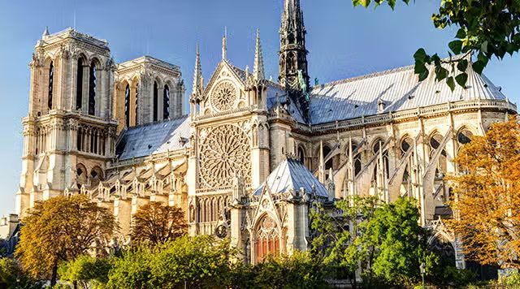
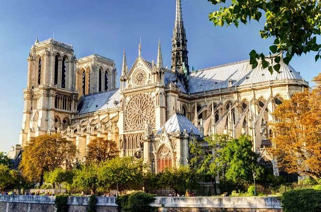
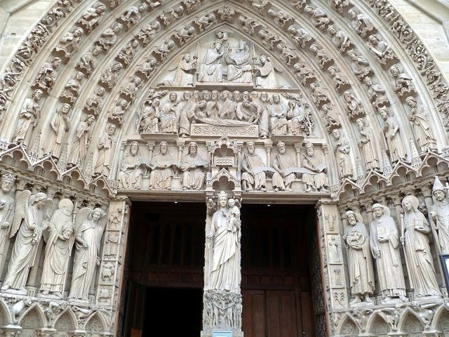
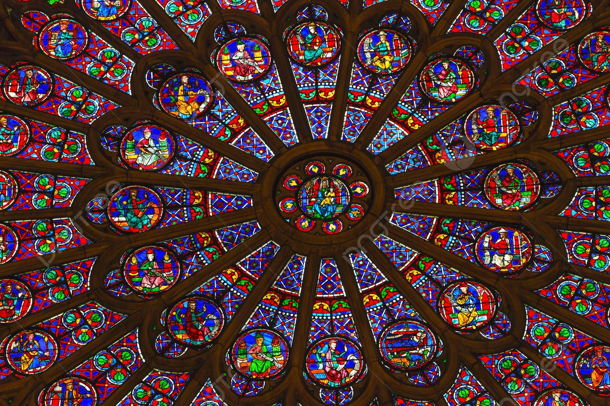
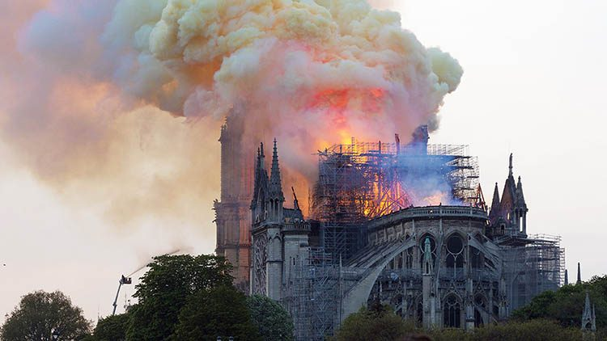

Una catedral consagrada a María

«Notre-Dame» significa simplemente «Nuestra Señora». Desde su fundación, la catedral de París fue dedicada a la Virgen María: su nombre, su fachada, sus portales, sus rosetones y gran parte de su programa escultórico están orientados a celebrar a la Madre de Dios. Esta consagración a María no es un detalle decorativo: implicaba que el obispo de París era, en cierto modo, un servidor de Nuestra Señora, y que la diócesis entera estaba bajo su protección.
La iniciativa de construir la catedral fue del obispo Maurice de Sully, que en 1160 decidió reemplazar la antigua basílica de San Esteban (Saint-Étienne) por un edificio a la altura de la nueva espiritualidad de su tiempo. La primera piedra fue colocada por el papa Alejandro III en 1163. La construcción duraría 182 años.
«Desde ahora me llamarán bienaventurada todas las generaciones.»
La arquitectura gótica y sus innovaciones

Notre-Dame es uno de los primeros ejemplos de la arquitectura gótica plena y el modelo que imitaron las catedrales de toda Europa. Sus innovaciones técnicas fueron revolucionarias: los arcos apuntados permiten elevar las bóvedas más que los arcos de medio punto; los arbotantes —arcos exteriores que transfieren el peso de las bóvedas hacia los contrafuertes— liberan los muros de la función portante y permiten abrirlos en enormes ventanales. El resultado es un edificio que parece hecho de luz y piedra fina en lugar de masa sólida.
La fachada occidental —con sus dos torres de 69 metros, su rosetón central de 9,6 metros de diámetro y sus tres portales esculpidos— se convirtió en el modelo de referencia para todas las catedrales góticas posteriores. La fachada como «Biblia en piedra»: cada portal cuenta una historia sagrada que incluso el analfabeto podía leer.
El Portal de la Virgen

La fachada occidental tiene tres portales. El de la izquierda —el Portal de la Virgen— está íntegramente dedicado a María y es uno de los programas iconográficos marianos más completos del arte medieval. El tímpano (el espacio semicircular sobre la puerta) muestra en tres registros la historia completa de la Virgen: en la parte inferior, el Arca de la Alianza y escenas del Antiguo Testamento prefigurando a María; en el registro central, la Dormición y la Asunción; en el superior, la Coronación de la Virgen, rodeada de ángeles y santos.
En el parteluz (la columna central que divide el portal en dos) está la estatua de María con el Niño, la más venerada de la catedral. Las esculturas originales fueron destruidas durante la Revolución Francesa; las actuales son restauraciones del siglo XIX realizadas por Viollet-le-Duc.
Los rosetones y las reliquias

Los tres grandes rosetones de Notre-Dame son, junto con el Portal de la Virgen, las obras marianas más importantes de la catedral. El rosetón norte —el mejor conservado y el único que mantiene sus vidrieras medievales originales del siglo XIII— está dedicado a María y narra escenas del Antiguo Testamento que prefiguran su papel: los profetas que la anuncian, los reyes de su genealogía. La Virgen aparece en el centro, en trono.
Entre las reliquias conservadas en la catedral se encuentra la Corona de Espinas de Cristo, adquirida por Luis IX (San Luis) en 1239 y uno de los tesoros más venerados de la Iglesia occidental. También se conserva un fragmento de la Vera Cruz y un clavo de la Pasión. Todas estas reliquias fueron salvadas durante el incendio de 2019 por los bomberos y el personal de la catedral.
El incendio de 2019 y la resurrección

El 15 de abril de 2019, un lunes de Semana Santa, un incendio declarado durante las obras de restauración de la aguja destruyó en pocas horas la totalidad de la estructura de madera del techo —conocida como «la foresta» por los miles de robles medievales que la componían— y derrumbó la aguja neo-gótica añadida por Viollet-le-Duc en 1859. Las torres y la fachada occidental fueron salvadas. Los tres rosetones sobrevivieron. Las reliquias y los tesoros más importantes fueron evacuados.
Las imágenes de Notre-Dame en llamas impactaron al mundo entero con una fuerza que ningún análisis sociológico terminó de explicar del todo. En pocas horas, más de mil millones de euros fueron donados para la reconstrucción. Las obras comenzaron en 2020 y la catedral reabrió sus puertas al culto el 7 de diciembre de 2024, en la víspera de la fiesta de la Inmaculada Concepción —fecha que pareció, a muchos, una coincidencia cargada de sentido.
Significado mariano
Notre-Dame es la catedral mariana por excelencia de la tradición occidental: no simplemente un edificio dedicado a María, sino un edificio que intenta encarnar en piedra, vidrio y luz lo que María representa teológicamente. La catedral gótica, con sus muros que desaparecen en ventanales luminosos, con su elevación vertiginosa hacia el cielo, con su capacidad de transformar la piedra en algo etéreo, es una imagen de María como porta caeli —puerta del cielo— y como stella maris —estrella del mar—, la que guía a los navegantes en la oscuridad hacia el puerto seguro.
El incendio y la reconstrucción añadieron una dimensión más al simbolismo de Notre-Dame: la dimensión de la resurrección. La catedral que ardió el lunes de Semana Santa y reabrió en la víspera de la Inmaculada es hoy, para muchos fieles, un signo de esperanza: lo que parecía destruido para siempre puede renacer.